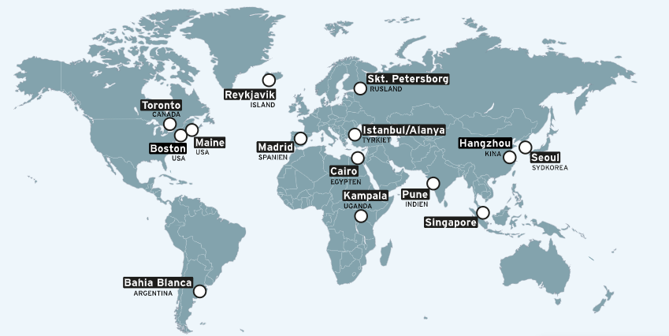

Talentudvikling på Rys
For dig med ambitioner
For dig med ambitioner
Rysensteen Gymnasium er en internationalt orienteret profilskole. Alle skolens elever gennemløber som en del af deres
gymnasieuddannelse skolens internationale program – Global Citizenship Programme, hvilket betyder, at alle som en del
af
almendannelsen får en udbredt kulturforståelse og en grundlæggende viden om globalisering og verdensborgerskab.
Skolen er også meget værdiorienteret med en stærk demokratisk omgangsform, hvilket betyder, at eleverne i udpræget grad
engagerer sig i skolens liv også udenfor undervisningen.
Elevrådet arbejder selvstyrende og målrettet involverende med
nedsættelse af arbejdsgrupper og prioritering af indsatser, mens et væld af autonome udvalg organiserer et kulturbåret elevmiljø.
Arbejdet med internationalisering har stor betydning for aktiviteterne på Rysensteen Gymnasium. Alle klasser har en partnerskole
et sted i verden og gennem de tre gymnasieår arbejdes der i fagene tilbagevendende med et internationalt
perspektiv inspireret af partnerskolens beliggenhed. Alle skolens klasser har udveksling med partnerskolens elever. Samtidig med dette er der mange andre internationale tilbud for både hold og enkeltelever. Skolens fokus er, at eleverne
skal udvikle ikke blot et medborgerskab men også et verdensborgerskab gennem deres gymnasietid. Se mere om dette under både profil og internationalisering.
Rysensteens partnerskoler:

På Rysensteen Gymnasium holdes der morgensamling en gang om måneden.
Her har alle skolens udvalg en mulighed for at komme til orde.
Det er også her der orienteres om vedtægter eller anden information
fra skolens ledelse. Til sidste sluttes der af med det altid så hyggelige
sig det med blomster hvor ryssere giver deres følelser til udtryk.

Alle studieretninger på STX rummer op mod 70 % obligatoriske fag. Når vi alligevel omtaler studieretningerne som centrale, skyldes det, at de obligatoriske fag i udpræget grad tones efter de studieretningsfag, som du vælger. Derfor skal du vælge efter din interesse og dine evner.
Rysensteen tilbyder disse studieretninger:
Rysensteen Gymnasium
Tietgensgade 74
1704 København V
Tel: 33 24 43 11
Email: mail@rysensteen.dk
CVR-nr: 29542708